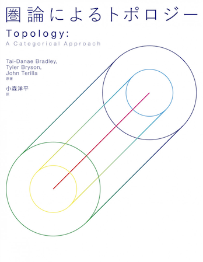
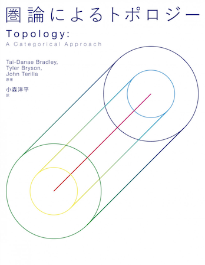

Topology: A Categorical Approach
 

Chapter pdfs are available for free: open access version.
Cover art by London Tsai.
Videos
Here are some short videos that supplement the material in the book.
- What is topology?
- The subspace topology
- Paths
- Compact and Hausdorff
- Filters and Ultrafilters (Part I: no topology)
- Filters and Ultrafilters (Part II: convergence and topological properties)
- Categorical limits and colimits are unique
- Compactifications
- Exponential Topologies
- The Seifert Van Kampen Theorem
- Covering Spaces (Part I: intro and based covers)
- The category of G-Sets
- Covering Spaces (Part II: the big picture)
These videos are available on the channel YouTube@topology_categorical.
Reviews
- AMS Notices Book Review from Septebmer, 2022.
- MAA Reviews from July, 2021.